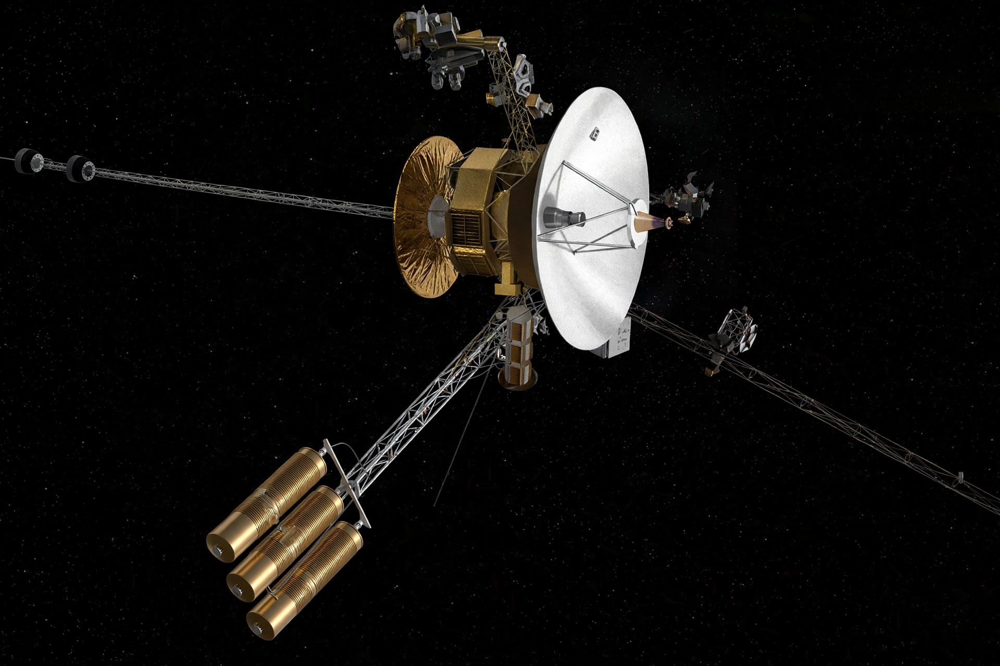

NASA Science · Missions
| Voyager program | |
|---|---|
| Operator | NASA (JPL) |
| Launches | 1977 (Voyager 2, then Voyager 1) |
| Status | Both probes in interstellar space |
| Cargo | Golden Record aboard each |

The Voyager program consists of two NASA robotic probes launched in 1977 to exploit a rare alignment of the outer planets. Voyager 1 flew by Jupiter and Saturn; Voyager 2 became the only spacecraft to visit Jupiter, Saturn, Uranus (1986) and Neptune (1989).
Both probes later crossed into interstellar space — Voyager 1 in 2012 and Voyager 2 in 2018 — and continue returning data on the heliosphere's edge with dwindling power from their radioisotope generators. They are the most distant human-made objects, carrying the Golden Record of sounds and images of Earth. Engineers have performed remarkable remote repairs, including reprogramming Voyager 1 after its 2023–24 data fault.